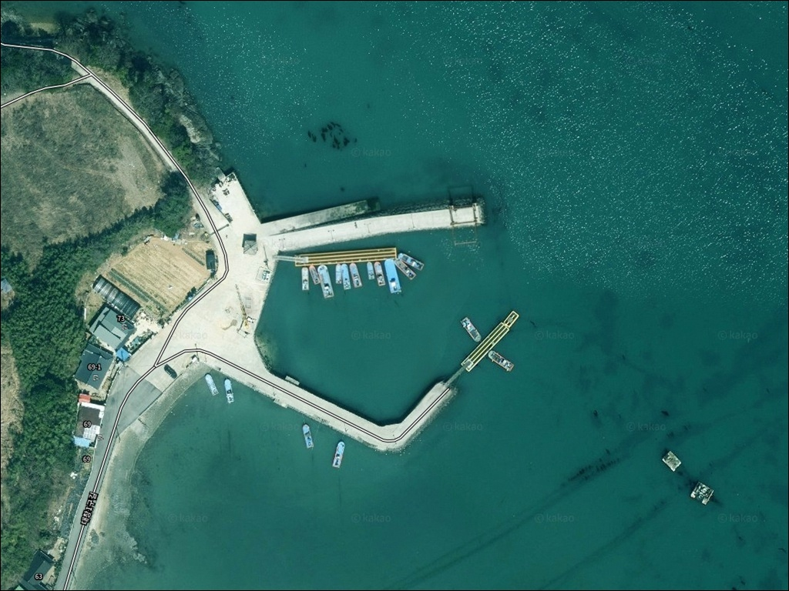
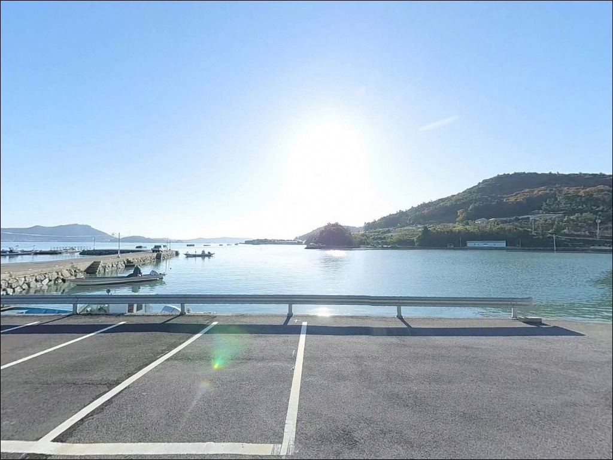
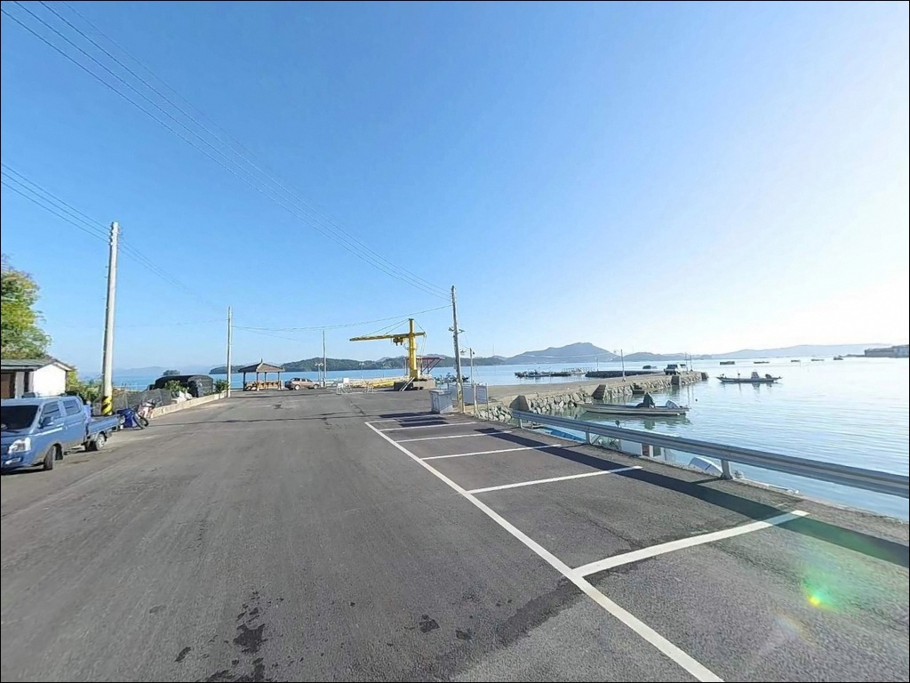
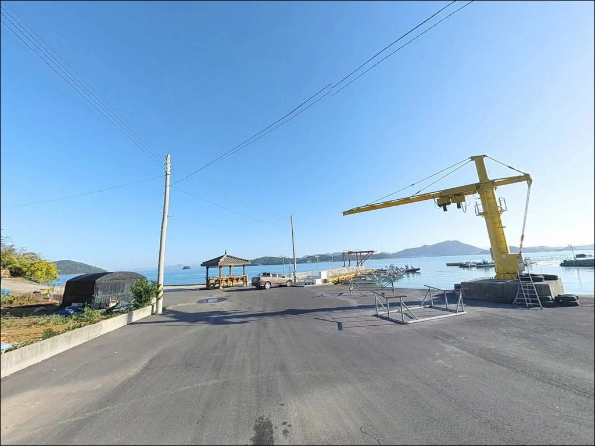
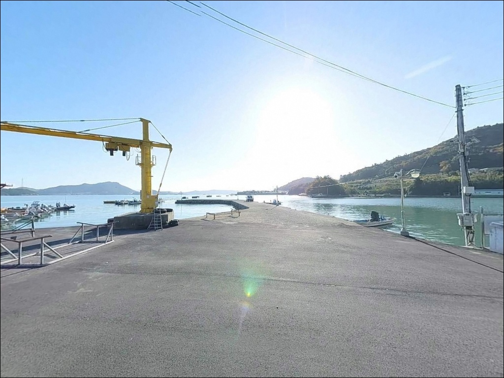
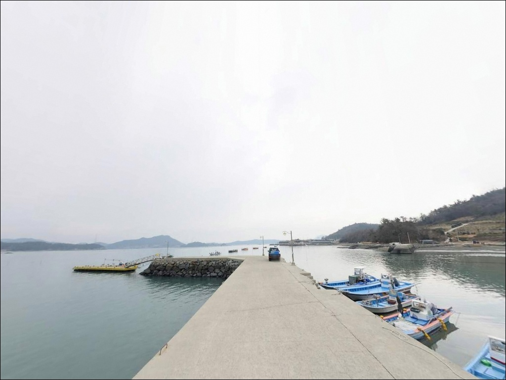
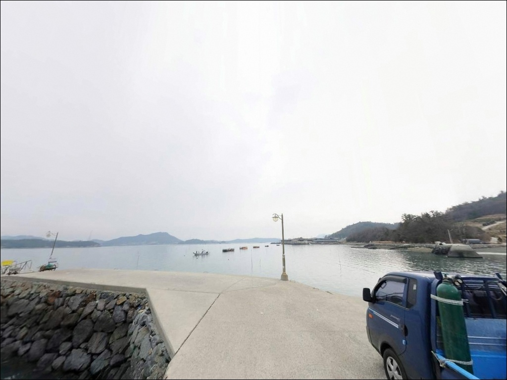
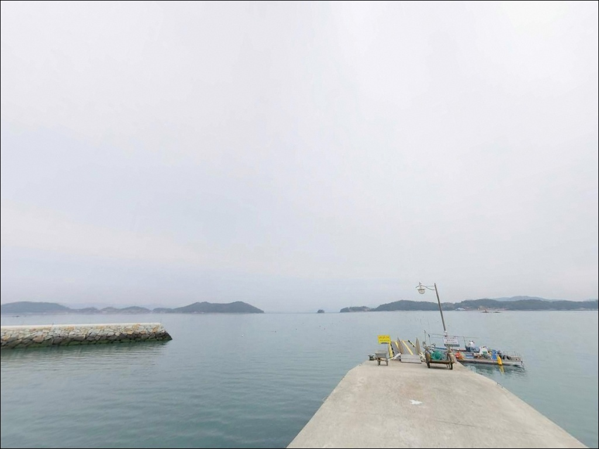
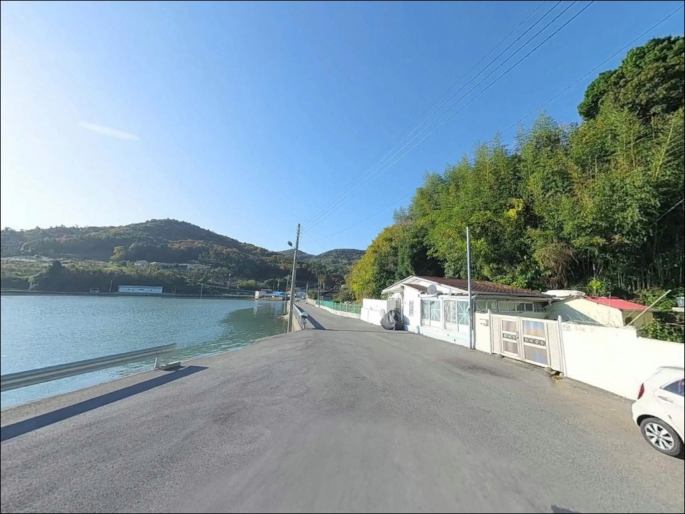

영풍리 방파제, 전남 완도군 이번 주말 가볼 만한 바다 차박 낚시 장소 추천
이 페이지에는 광고(제휴 링크 포함)가 있으며, 광고 링크를 통해 구매하면 운영자가 판매 수익 또는 수수료를 받을 수 있습니다. 포인트 사진: 카카오맵 스카이뷰·로드뷰. 이 페이지의 지도·사진 이미지는 카카오맵의 실제 서비스 이미지와 다를 수 있습니다.


포인트 안내
영풍리 방파제
전남 완도군 군외면 영풍리 179
마을 안길을 통과해 방파제까지 이어지는 진입로는
폭이 좁은 구간이 포함되어 있습니다.
대형 차량이 진입 후 회차가 어려운 상황이 되면
낚시 자리 선택보다 차량 이동이 먼저가 됩니다.
영풍리 방파제는 완도 본도 북동쪽,
완도와 해남 사이 수역을 바라보는
군외면 해안선에 자리합니다.
외항과 내항이 구분되는 방파제 구조로,
조류 흐름이 살아 있는 외항 쪽이
낚시 자리로서 기본 조건을 갖추고 있습니다.
이 글은
영풍리 방파제의 진입 동선,
차박 체류 여건, 지형 기반 낚시 조건,
낚시 스타일 제안에 집중합니다.
조황 단정이나 특정 어종 보장은
이 글의 범위에 포함되지 않습니다.

1. 진입 동선과 포인트 접근성
영풍리는 완도 본도 안에 위치하며
육지에서 완도대교를 건너
해안선을 따라 이어지는 청해진로 방면으로
차량 진입이 가능합니다.
2차선 해안도로까지는 접근이 수월한 편이며,
남파랑길이 통과하는 구간이라
도로 자체의 존재는 확인됩니다.
방파제까지의 마을 안길은 어촌 특성상
폭이 좁아지는 구간이 포함될 수 있습니다.
출발 전 카카오맵 또는 네이버지도
로드뷰로 진입로를 먼저 확인하는 것이
현장에서 당황하지 않는 가장 빠른 방법입니다.
대형 SUV나 루프박스를 얹은 차량이라면
회차 공간도 함께 살펴야 합니다.
주차는 방파제 초입 공터나
선착장 주변 여유 공간을 활용하는 방식이
일반적입니다.
전용 주차 시설은 기대하기 어렵고,
어선 출입 동선을 막지 않는 자리를
우선으로 선택하는 것이 기본 매너입니다.

2. 차박 환경과 야간 체류 여건
영풍리는 외부 관광객 통행이 많지 않은
조용한 소규모 어촌 마을입니다.
민가 밀집도가 낮아
야간 프라이버시는 비교적 양호한 편이며,
차량 통행도 적어 전반적으로
한적한 분위기입니다.
방파제 자체의 가로등은 많지 않을 가능성이 있어
개인 조명 장비는 필수입니다.
완도 북동쪽 수역 특성상
기상에 따라 바람 영향을 받는 경우가 있으므로,
차박 체류 전날 기상 예보 확인이
야간 체류의 질을 결정하는 조건이 됩니다.
차량을 세울 수 있는 공간이 좁기 때문에
차박 자체를 메인으로 삼기보다는
낚시 후 조용히 하룻밤 머무는 용도로
접근하는 편이 현실적입니다.
주차 공터를 먼저 확인하고
여유가 있을 때만 체류를 결정하는
유연한 계획이 맞는 포인트입니다.


3. 주변 편의시설 및 인프라 현황
영풍리 방파제 반경 3km 이내에서
편의점이나 슈퍼를 기대하기는 어렵습니다.
출발 전에 식수, 얼음, 낚시 소품, 식량,
연료를 모두 갖추고 오는
완전 자급 체제가 기본 준비 방식입니다.
군외면 원동리 면소재지 방면으로
6~7km 이동하면 편의점과 슈퍼가
있는 지역에 닿을 수 있습니다.
GS주유소(원동리 222-27, 061-552-5505)가
이 일대 주유 거점이 됩니다.
부족한 소품이 있다면
이 동선을 미리 계획해 두는 편이 좋습니다.
완도읍 방면으로 약 10km 이동하면
화흥포항과 완도 수산시장(완도읍 가용리 1013)
일대에서 미끼와 식사를
해결할 수 있습니다.
완도 수산시장은 월~토 11:00~15:00 운영,
일요일은 휴무입니다.

4. 방문 전 챙겨야 할 준비사항
영풍리 방파제를 처음 찾는다면
바다타임에서 완도 군외면 기준 물때를
먼저 확인하는 것이 출발 전 첫 번째 순서입니다.
군외면 수역은 완도 동쪽 수역에 해당하며
조류 흐름이 방파제 낚시 여건을 결정하는
핵심 변수입니다.
기상 변화에 민감한 남해안 수역이므로
출발 당일 아침에 기상청 예보와
파고·풍속을 다시 확인하는 습관이
헛걸음을 막는 조건입니다.
암초와 테트라포드 주변을 탐색하는 과정에서
채비 손실이 생길 수 있으니
여분 채비는 넉넉히 챙기는 편이 낫습니다.
영풍리는 어선 조업이 이루어지는
생활형 어촌 마을입니다.
방파제 주변에서 어선 이동 동선과
어구에 접촉하지 않도록
자리를 잡는 것이 기본이며,
야간에는 구명조끼와 헤드랜턴을
반드시 착용합니다.

5. 지형 구조로 읽는 낚시 여건
영풍리 방파제는 완도와 해남 사이 수역을
바라보는 방향으로 자리 잡은 구조입니다.
완도 동쪽 수역 특성상
조류는 반시계 방향의 흐름이 나타나는 편이며,
방파제 외항 쪽으로
수심이 빠르게 깊어지는 구간이
있을 가능성이 있습니다.
수심 6~10m 구간이 외항 쪽에 형성되는 구조로,
방파제 끝단과 굴곡 지점이
일반적인 포인트 자리가 됩니다.
방파제 석축 주변에는 어류의 은신처가
자연스럽게 형성되어 있어,
석축 경계를 따라 탐색하는 방식이
이 구조의 포인트에서 유효합니다.
내항 쪽은 비교적 잔잔한 수면 조건을
유지하는 편으로,
생활낚시 목적이라면 내항에서도
찌를 던져볼 수 있는 구조입니다.
외항 조류가 강한 시간대에는 내항을,
조류가 적당히 흐를 때는 외항 끝단을
우선으로 노리는 방식이 효율적입니다.
이 일대 최신 조황은 출조 전에
'군외면 방파제 낚시' 또는
'완도 대창리 방파제 조황'으로
검색해 보시기 바랍니다.


6. 이 포인트에서 시도해볼 낚시 스타일
원투낚시는 이 방파제 구조에
가장 무난하게 맞는 방식입니다.
외항 방향으로 70~100m 장타를 던져
바닥 어종을 탐색하는 접근이
수심 있는 방파제 외항 구간에 잘 맞습니다.
30~40호 봉돌을 활용한 채비가
조류 세기에 따라 바닥을 잡는 데 유리합니다.
찌낚시도 외항 테트라포드 주변에서
시도해볼 만합니다.
완도 일대는 릴찌낚시로
다양한 어종을 노리는 방식이
널리 활용되는 수역입니다.
조류 방향을 읽고 흘림 방향을 잡는 것이
찌낚시 자리 선정의 핵심 기준입니다.
볼락 라이트게임도 이 포인트에 어울립니다.
방파제 석축과 테트라포드 경계는
볼락이 서식하기에 적합한 지형 조건을
갖추고 있습니다.
야간에 소형 지그헤드 채비를 활용해
석축 주변을 천천히 탐색하는 방식이
이 구조의 포인트에서 효과적입니다.
에깅 채비로 갑오징어를 노리는 시도도
수로 구간이 형성될 경우 기대해볼 수 있습니다.

7. 영풍리가 여의치 않을 때 이동할 대안 포인트
영풍리와 같은 군외면 해안선에 위치한
대창리 방파제가 첫 번째 대안입니다.
동일한 수역 특성을 공유하면서
낚시 커뮤니티에 이름이 오른 포인트로,
영풍리와 함께 묶어 탐색하는 동선이
이 일대에서 가장 효율적입니다.
불목리 방파제와 황진리 방파제도
군외면 동일 해안선의 대안 포인트입니다.
영풍리가 기대에 못 미치는 경우
해안선을 따라 이동하며
두 곳을 순서대로 탐색하는 방식이
이 권역에서 플랜B를 활용하는
현실적인 이동 경로입니다.
완도읍 방면으로 이동하면
완도 씨월드 인근 방파제가 있습니다.
감성돔 낚시 후기가 다수 확인된
완도 대표 방파제로,
진입과 편의 여건도 영풍리보다
안정적인 편입니다.
처음 방문하는 낚시인이라면
씨월드 방파제를 기점으로 잡고
영풍리를 병행 탐색하는 동선도
좋은 선택입니다.

조용한 방파제를 직접 발굴하는
낚시인에게 맞는 포인트입니다
영풍리 방파제는 온라인에 조황 기록이
거의 남아 있지 않은 곳입니다.
그만큼 발품을 먼저 팔아야 하는 포인트이지만,
완도 군외면 수역의 기본 여건은
방파제 낚시 조건을 갖추고 있습니다.
외항 수심과 조류 흐름, 석축 구조 모두
원투와 찌낚시, 볼락 라이트게임이
이 지형 조건과 맞는 스타일입니다.
반면 편의시설 없는 자급형 포인트이고
진입로 사전 확인 없이 대형 차량으로
무작정 들어가면 낭패를 볼 수 있습니다.
물때 확인, 진입로 사전 점검, 완전 자급 준비,
이 세 가지가 갖춰진 상황에서라면
아직 덜 알려진 포인트를 먼저 선점하는 출조가
될 수 있는 곳입니다.
낚시 후 조용한 어촌 마을 끝에서
하룻밤 머무는 차박 여행자에게도
차박 공간이 확보된다면
군외면 해안의 조용한 밤을
경험할 수 있는 포인트입니다.